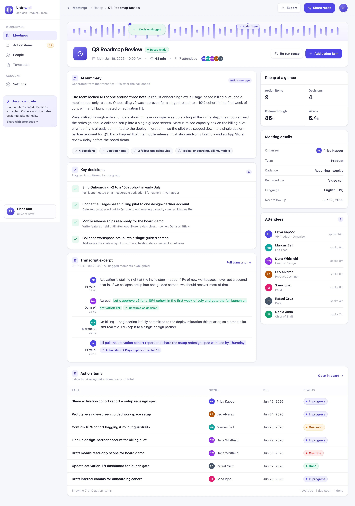

Record & transcribe
Notewell joins the call or takes an upload and produces a speaker-labeled transcript in real time — no note-taker required.
Notewell records and transcribes your meetings, pulls out the decisions and action items, assigns owners and due dates, and tracks follow-through — so nothing agreed in the room quietly disappears.
Let's ship onboarding v2 to a 10% cohort in July, gated on activation lift.
Keep the billing pilot to one design-partner account this quarter.
Decisions get made and to-dos get promised — then the recording sits unwatched and the notes never become work. Notewell closes that gap the moment the call ends.
The to-do is spoken, everyone nods — and it never makes it into a system anyone will check.
Two weeks later nobody agrees on what was actually decided — or who agreed to it.
A task with no name and no date attached is a task nobody is actually going to do.
Whoever missed the call is left guessing, and the room re-litigates it all next week.
Notewell doesn't just transcribe — it structures. Every recap ships with decisions, owned action items and a follow-through score you can hold people to.
Notewell runs the whole path from a live conversation to owned, tracked work — with no one taking manual minutes in the middle.
Notewell joins the call or takes an upload and produces a speaker-labeled transcript in real time — no note-taker required.
The model reads the transcript, pulls out every decision and action item, and drafts a clean, shareable recap in seconds.
Each action item gets an owner and a due date, then Notewell tracks follow-through until every item is closed out.
BuildspaceLabs built the MVP front end: a Meetings dashboard for the whole team and a per-meeting recap for the decisions and action items.
Weekly meetings, action items captured, overdue and hours saved sit above a table where follow-through is a column you can sort on.

An AI summary up top, the key decisions listed out, an action-items table with statuses, and a transcript with the exact moments Notewell flagged.

Transcription, recap, decisions, owned action items and follow-through — one surface, from the call to the closed task.
A speaker-labeled transcript in real time, from a live call or an uploaded recording.
A clean, shareable summary of what happened — ready the moment the call ends.
Every decision and to-do pulled out of the conversation automatically, with context.
Each action item is assigned to a person and dated — a task someone will actually do.
A per-meeting and per-owner view of what shipped, what's due soon and what's overdue.
Send the recap to everyone who was — and wasn't — in the room, in one click.
Plenty of tools will hand you a wall of text. Notewell hands you owned, dated, tracked work — so the meeting produces outcomes, not just a recording nobody opens.
Delivered as a production-quality MVP in an eight-week engagement.
We build AI-native products like Notewell. Tell us how your team runs meetings and we'll show you what recaps, owned action items and tracked follow-through look like on your calls.